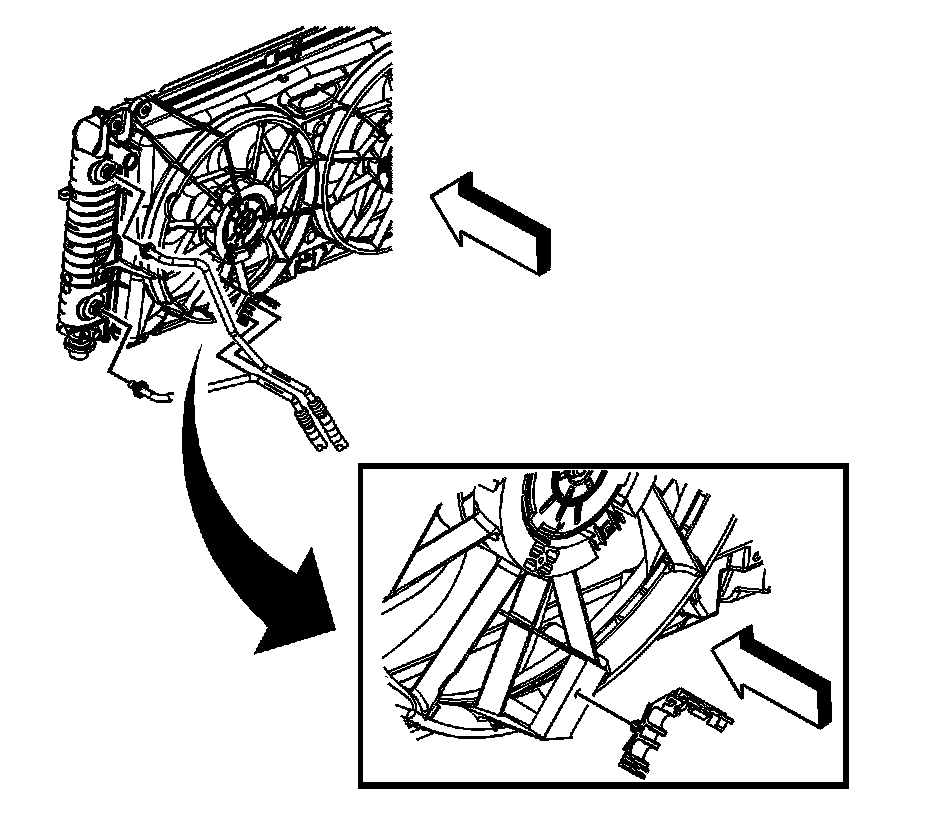
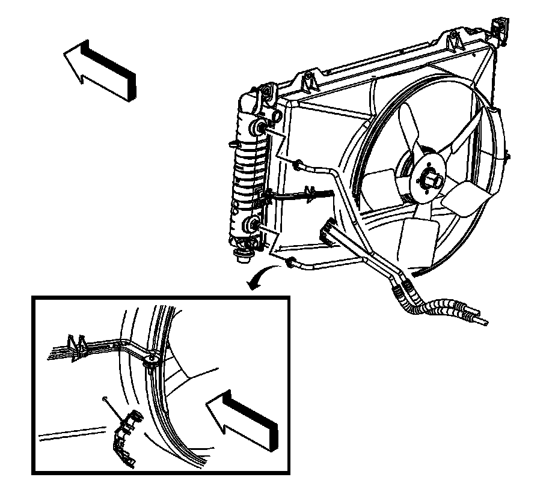
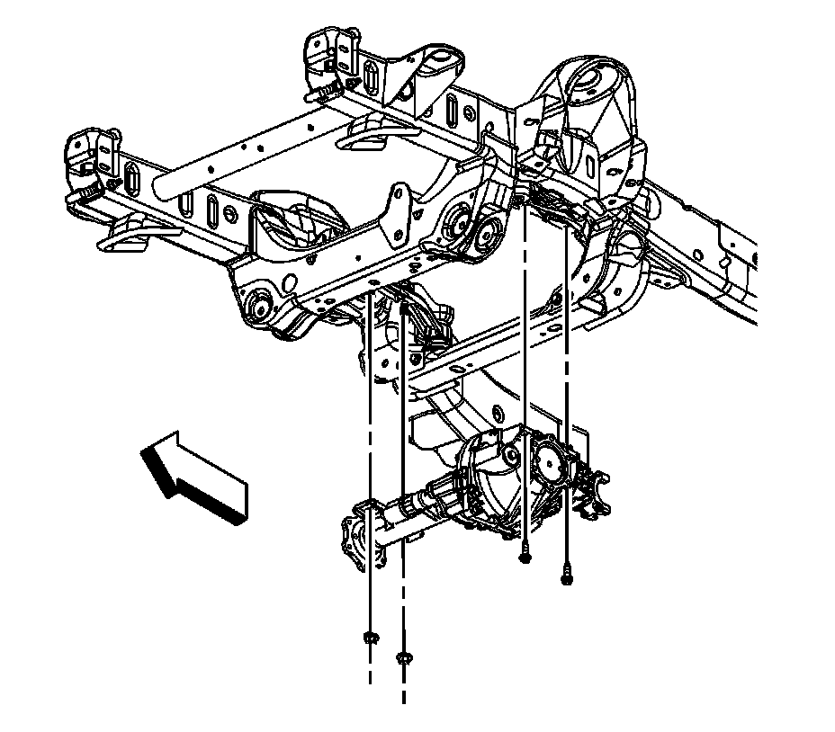
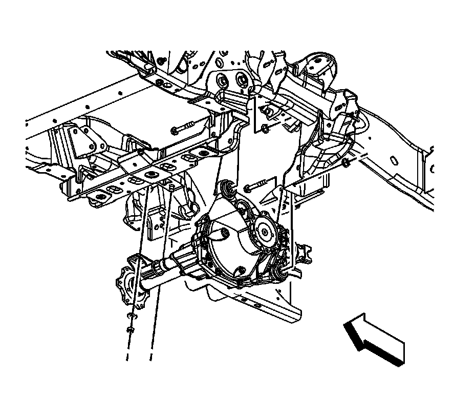
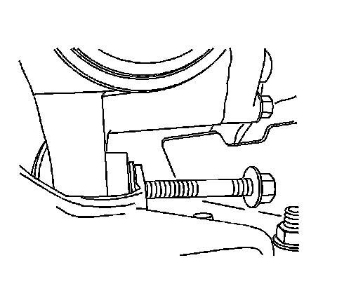
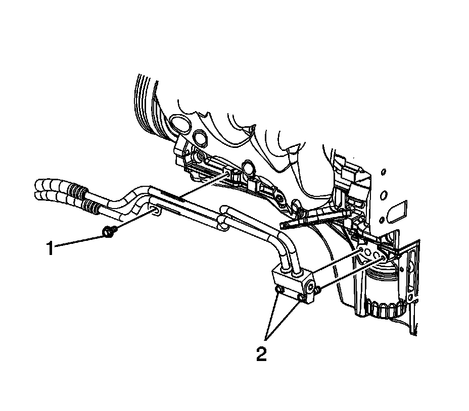

Removal and Replacement
Engine Oil Cooler Hose/Pipe Replacement
Removal Procedure
The optional oil cooler is either an integral part of the radiator or a separate unit placed in front of the radiator. The cooler lines and hoses are serviceable.

1. Disconnect the engine oil cooler quick connect fittings. Refer to Engine Oil Cooler Pipe/Hose Quick Connect Fitting.
2. If equipped with regular production option (RPO) L76 (6.0L) engine, perform the following.
1. Open the oil cooler hose clip located on the lower fan shroud.
2. Remove the oil cooler hoses from the clip.
3. Raise and suitably support the vehicle. Refer to Lifting and Jacking the Vehicle.

4. If equipped with RPO LY6 (6.0L) engine, remove the oil cooler hoses from the clip.
5. Place a jack or utility stands at the rear of the vehicle.
6. If equipped, remove the engine protection shield. Refer to Engine Shield Replacement.
7. If equipped, remove the front differential carrier shield. Refer to Shield Replacement.

8. For both 1500 and 2500 series, support the front differential carrier with a suitable adjustable jack.
9. For 1500 series vehicles, remove the differential carrier right side nuts.

10. Remove the differential carrier left side bolts.
11. Lower the differential carrier.
12. For 2500 series vehicles, remove the differential carrier right side nuts.

13. Remove the differential carrier upper mounting bolt and nut.
14. Remove the differential carrier lower mounting bolt and nut.

15. If equipped with RPO L76 (6.0L) engine, perform the following:
1. Lower the differential carrier.
2. Remove the oil cooler hose adapter bolts (2).
3. Remove the oil cooler hose assembly and gasket. Discard the gasket.
4. Inspect the fittings, connectors, and cooler hoses for damage or distortion.

16. If equipped with RPO LY6 (6.0L) engine, perform the following:
1. Remove the oil cooler hose bracket bolt. (1)
2. Remove the oil cooler hose adapter bolts. (2)
3. Remove the oil cooler hose assembly. Discard the gasket.
4. Inspect the fittings, connectors, and cooler hoses for damage or distortion.
Installation Procedure
Notice: Refer to Fastener Notice.
1. If equipped with RPO LY6 (6.0L) engine, perform the following:
1. Install the oil cooler hose assembly and a NEW gasket.
2. Install the oil cooler hose adapter bolts (2).
Tighten the bolts to 12 N.m (106 lb in).
3. Install the oil cooler hose bracket bolt.
Tighten the bolt to 25 N.m (18 lb ft).
2. If equipped with a RPO L76 (6.0L) engine, perform the following.
1. Install the oil cooler hose assembly and a NEW gasket.
2. Install the oil cooler hose adapter bolts (2).
Tighten the bolts to 12 N.m (106 lb in).
3. Install the oil cooler hose bracket bolt (1).
Tighten the bolt to 25 N.m (18 lb ft).
3. For 2500 series vehicles, raise the differential carrier into position.
4. Install the differential carrier left side upper bolt and nut until snug.
5. Install the differential carrier left side lower bolt and nut until snug.
6. Install the differential carrier right side nuts.
Tighten the bolt to 100 N.m (74 lb ft).
7. For 1500 series vehicles, raise the differential carrier into position.
8. Install the differential carrier right side nuts.
9. Install the differential carrier left side bolts.
Tighten the bolts/nuts to 100 N.m (74 lb ft).
10. If equipped, install the engine protection shield. Refer to Engine Shield Replacement.
11. Remove the jack or utility stand from the rear of the vehicle.
12. Lower the vehicle.
Important:
^ Ensure the oil cooler line being installed has a plastic cap on the end that connects to the quick connect fitting. If no plastic cap exists, or the plastic cap is damaged, obtain a new cap. Install the cap onto the cooler line prior cooler line installation.
^ Do not use the plastic cap in order to install the cooler line into the fitting.
If equipped with RPO LY6 (6.0L) engine, install the oil cooler hoses to the clip.
Important:
^ Ensure the oil cooler line being installed has a plastic cap on the end that connects to the quick connect fitting. If no plastic cap exists, or the plastic cap is damaged, obtain a new cap. Install the cap onto the cooler line prior cooler line installation.
^ Do not use the plastic cap in order to install the cooler line into the fitting.
If equipped with RPO L76 (6.0L) engine, perform the following:
1. Install the oil cooler hoses to the hose clip on the fan shroud.
2. Snap the oil cooler hose clip shut.
13. Install the oil cooler lines to the radiator. Refer to Engine Oil Cooler Pipe/Hose Quick Connect Fitting.